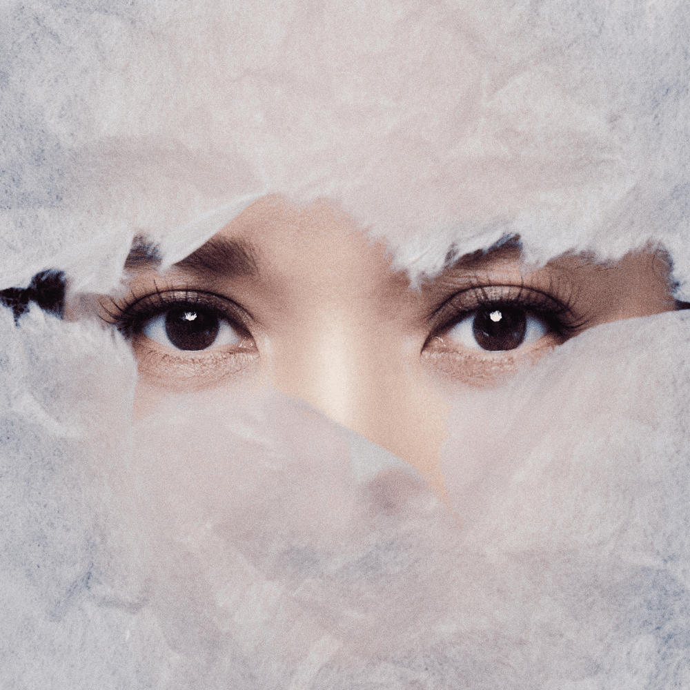

indiek.
EDITOR’S PICK / R&B
Yoon MiraeBreath (숨)
SINGLE / 23 DECEMBER 2025
Guitar-led and spare, “Breath” leaves room for Yoon Mirae’s voice. This acoustic R&B song follows the small, ordinary reminders that remain after a breakup.
Composed by Yoon Mirae & Tiger JK.
Lyrics by Tiger JK.
Release on Apple Music ↗

BEHIND THE VOICE / 윤미래
Meet Yoon Mirae.
Also known as Tasha or T, Yoon Mirae is a rapper and singer whose work spans hip-hop, R&B and drama soundtracks. She debuted with Uptown in 1997, went on to perform in the duo Tashannie, and began her solo career with As Time Goes By in 2001.
Her 2007 album t 3 YOONMIRAE won Best R&B & Soul Album at the 2008 Korean Music Awards. “What’s Up! Mr. Good Stuff” also won the song award in that category. Listen across her catalogue for both the rapper and the singer; “Breath” is a quiet place to begin.
Read more: Artist biography ↗ · Korean Music Awards ↗
THE LISTENING SHELF / HANDPICKED SONGS
Worth your time.
Songs to get lost in.
Picked for the curious.
FIELD NOTES / A LITTLE CONTEXT
Follow the sound.
A PLACE TO START · 2 MIN READ
One song.
Four ways in.
Two bands, two solo artists. Follow four starting points into a wider world of Korean music.
Meet Motte through “Don’t run away”, from the soundtrack to A-TEEN.
On attachment and moving forward in HANRORO’s “Even if you leave”.
Different language.
Same feeling.
A personal listening journal, made by a fan.
Korean artists and songs I wish more people knew.
Shared for the love of music, with no commercial aim.